交換 · 星星沙子 · 友誼等級
Pokémon GO 交換指南
交換一次要多少星星沙子、什麼是特殊交換、友誼等級差在哪、怎麼換到亮晶晶寶可夢，一頁整理清楚。 費用、折扣與規則都對照遊戲資料和官方說明，社群推算的數字會另外標示。
- 一般交換 100 星沙
- 特殊交換 一天 1 次
- 正港好朋友特殊交換 −96%
- 內容核對 2026-11-09
（任何友誼等級）
（好朋友 → 正港好朋友）
（好朋友 → 正港好朋友）
（社群研究）
✨星星沙子費用表
交換時雙方都要付星星沙子。費用看兩件事：是不是特殊交換，以及兩人的友誼等級。友誼等級只會讓特殊交換變便宜，圖鑑已有的一般寶可夢永遠是 100。
| 友誼等級 | 一般寶可夢圖鑑已登錄 | 一般寶可夢圖鑑未登錄 | 傳說・異色圖鑑已登錄 | 傳說・異色圖鑑未登錄 |
|---|---|---|---|---|
| 好朋友無折扣 | 100 | 20,000 | 20,000 | 1,000,000 |
| 給力好朋友特殊交換 −20% | 100 | 16,000 | 16,000 | 800,000 |
| 麻吉好朋友特殊交換 −92% | 100 | 1,600 | 1,600 | 80,000 |
| 正港好朋友特殊交換 −96% | 100 | 800 | 800 | 40,000 |
| 正港好朋友＋特殊交換 −96% | 100 | 800 | 800 | 40,000 |
「傳說・異色」指傳說的寶可夢、異色寶可夢等特殊交換對象（定義見下方）。「圖鑑已登錄／未登錄」是看收到的那一方的圖鑑。 活動期間交換費用可能另外打折（例如減半或 1/4），以活動公告為準。
🧮費用試算
⭐什麼是特殊交換
遊戲說明列出的特殊交換對象：
- 傳說的寶可夢
- 幻之寶可夢
- 究極異獸
- 淨化後的寶可夢
- 異色寶可夢
- 自己圖鑑裡沒有的寶可夢
- 特殊交換一天只能 1 次（部分活動期間例外）。
- 友誼等級要達到好朋友才能進行特殊交換。
- 大部分幻之寶可夢其實不能交換，可以交換的例外請看不可交換寶可夢清單。
🤝友誼等級
每天和朋友互動（送禮物、交換、一起戰鬥等），每位朋友每天最多加 1 點友誼點數，所以下表的天數就是每天都互動時最快需要的天數。
| 友誼等級 | 需要天數 | 特殊交換折扣 | 交換後 IV 下限* | 一起戰鬥攻擊加成 | 團體戰額外精靈球 |
|---|---|---|---|---|---|
| 好朋友 | 1 天 | — | 1 | +3% | — |
| 給力好朋友 | 7 天 | 20% | 2 | +5% | 1 |
| 麻吉好朋友 | 30 天 | 92% | 3 | +7% | 2 |
| 正港好朋友 | 90 天 | 96% | 5 | +10% | 4 |
| 正港好朋友＋ | 180 天 | 96% | 未公布 | +12% | 4 |
* 交換後 IV 下限不是官方公布的數字，是社群收集大量交換結果整理出的數據（每一項 IV 至少多少）。「正港好朋友＋」的下限官方未公布。 攻擊加成是和朋友一起打團體戰、道館時的攻擊力加成。
🍀亮晶晶交換
- 亮晶晶好朋友：和朋友成為正港好朋友後，繼續每天互動，就有機會變成亮晶晶好朋友。下一次交換的兩隻寶可夢都一定會變成亮晶晶寶可夢；交換完成後，亮晶晶好朋友的狀態就會結束。
- 亮晶晶首飾：給力好朋友以上的朋友，可以用這個道具直接變成亮晶晶好朋友。
- 強化更省星沙：亮晶晶寶可夢強化所需的星星沙子減少 50%。
- IV 比較好：亮晶晶交換後每項 IV 至少 12（社群研究數據）。
- 一般交換也有機會變成亮晶晶，社群普遍觀察到越早以前捕捉的寶可夢機率越高；官方沒有公布確切機率。
🌏遠距交換（正港好朋友＋）
2025 年 12 月起，友誼等級在「正港好朋友」之上新增「正港好朋友＋」。達到後可以獲得遠距交換的額度，不用人在附近也能交換。
- 每位正港好朋友＋ 同時只會有 1 次遠距交換額度；遊戲資料設定每天最多進行 1 次遠距交換。
- 雙方先從對方標記的寶可夢中各挑最多 3 隻想要的，再各自選 1 隻交出。
- 遠距交換不算特殊交換。如果兩人是亮晶晶好朋友，遠距交換一樣會是亮晶晶交換。
- 不能遠距交換的寶可夢：30 日內捕獲的、先前交換過的、暗影寶可夢、幻之寶可夢、正在防禦道館或能量點的、目前的夥伴、處於超級進化形態的、合體的寶可夢、蒼響（劍之王）與藏瑪然特（盾之王）、在寶可夢遊樂場的寶可夢。
規則整理自官方公告。
🔁交換進化：交換來的免費進化
下面這些寶可夢平常進化要很多糖果，但透過交換得到的可以 0 顆糖果直接進化（資料來自遊戲資料）。
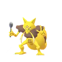
勇基拉→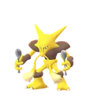
胡地原本要 100 顆糖果 豪力→
豪力→ 怪力原本要 100 顆糖果
怪力原本要 100 顆糖果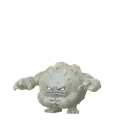
隆隆石（含阿羅拉的樣子）→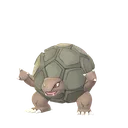
隆隆岩原本要 100 顆糖果 鬼斯通→
鬼斯通→ 耿鬼原本要 100 顆糖果
耿鬼原本要 100 顆糖果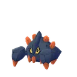
地幔岩→ 龐岩怪原本要 200 顆糖果
龐岩怪原本要 200 顆糖果 鐵骨土人→
鐵骨土人→ 修建老匠原本要 200 顆糖果
修建老匠原本要 200 顆糖果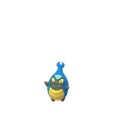
蓋蓋蟲→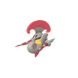
騎士蝸牛原本要 200 顆糖果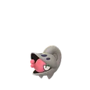
小嘴蝸→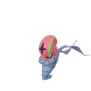
敏捷蟲原本要 200 顆糖果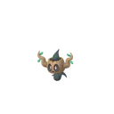
小木靈→ 朽木妖原本要 200 顆糖果
朽木妖原本要 200 顆糖果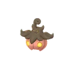
南瓜精（各種尺寸）→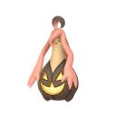
南瓜怪人原本要 200 顆糖果
📋交換的基本規則
- 訓練家等級要 10 級以上，而且雙方要是遊戲內的朋友。
- 一般交換時，雙方距離要在 100 公尺內（遠距交換除外）。
- 交換後，寶可夢的 IV 會隨機重新決定；如果對方的訓練家等級比較低，CP 和 HP 會被調低。
- 交換來的寶可夢不能再拿去交換。
- 交換會拿到糖果，兩隻寶可夢捕捉地點距離越遠（最多約 100 公里）糖果越多。
- 曾經超級進化或原始回歸的寶可夢，交換出去後超級等級（原始等級）會重置；當過夥伴的，夥伴等級也會重置。
- 常常和朋友交換，也會提升友誼等級。
交換常見問題
交換寶可夢要多少星星沙子？
圖鑑裡已經有的一般寶可夢，交換只要 100 星星沙子，跟友誼等級無關。特殊交換（圖鑑沒有的寶可夢、傳說、異色等）比較貴：圖鑑沒有的一般寶可夢在好朋友時要 20,000，正港好朋友降到 800；圖鑑沒有的傳說或異色寶可夢最貴，好朋友時要 1,000,000，正港好朋友是 40,000。
什麼是特殊交換？
遊戲說明：傳說的寶可夢、幻之寶可夢、究極異獸、淨化後的寶可夢、異色寶可夢，以及自己圖鑑裡沒有的寶可夢，都要用特殊交換。特殊交換一天只能進行一次（部分活動期間例外），而且友誼等級要達到好朋友。
交換後 IV 會變嗎？
會。遊戲說明寫明交換後寶可夢的基礎能力會被隨機調整，也就是 IV 會重新決定。友誼等級越高、IV 的下限越高（社群研究數據：好朋友 1、給力 2、麻吉 3、正港 5），亮晶晶交換則保證每項至少 12。
交換來的寶可夢可以再換出去嗎？
不行。遊戲規則是交換來的寶可夢不能再拿去交換。
哪些寶可夢不能交換？
暗影寶可夢和幻之寶可夢不能交換（少數幻之寶可夢例外），另外還有一些特定型態也不能交換。完整名單請看「不可交換寶可夢清單」。
怎麼樣會變成亮晶晶寶可夢？
成為正港好朋友後持續互動，有機會變成亮晶晶好朋友，下一次交換的兩隻寶可夢都一定會變成亮晶晶寶可夢。給力好朋友以上也可以用「亮晶晶首飾」直接變成亮晶晶好朋友。亮晶晶寶可夢強化所需的星星沙子減少 50%。
遠距交換是什麼？
友誼等級達到「正港好朋友＋」後可以獲得遠距交換的額度，不必在附近也能交換。遠距交換不算特殊交換；30 天內捕獲的寶可夢、交換過的寶可夢、暗影與幻之寶可夢等不能用遠距交換。
交換能拿到幾顆糖果？
交換時會拿到糖果，兩隻寶可夢的捕捉地點距離越遠（最多到約 100 公里），拿到的糖果越多。
資料來源：費用折扣、友誼等級、亮晶晶強化折扣與交換進化取自 Pokémon GO 遊戲資料（GAME_MASTER）；交換規則取自遊戲內的官方說明文字； 遠距交換取自官方公告；基本費用（100／20,000／1,000,000）與 IV 下限為攻略社群整理的數據。最後核對：2026-11-09。
準備好要交換了？
用交換清單產生器，把「我想要的」和「我能提供的」做成一張圖，直接貼給朋友或社團。